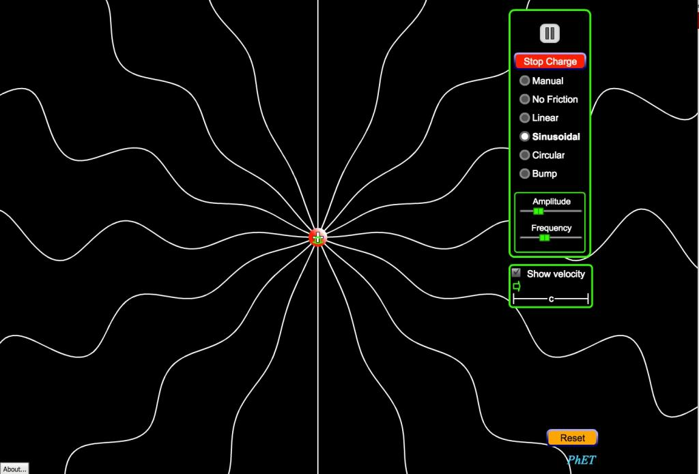

12.6 Passo Quatro: Mobilizar recursos existentes


Imagem: © University of Colorado-Boulder

A relevância da mobilização de recursos preexistentes foi destacada em diversas secções desta obra, especificamente nos Capítulos 8 e 11.
12.6.1 Transpor conteúdos para o on-line
A gestão do tempo pelo corpo docente assume caráter prioritário. A transposição mecânica de materiais presenciais para formatos digitais consome tempo e eleva a carga horária de trabalho. Apresentações de PowerPoint desprovidas de comentários áudio frequentemente perdem conceitos estruturais ou nuances explicativas, exigindo a gravação de explicações posteriores. A conversão de notas de aula em arquivos PDF carregados num sistema de gestão de aprendizagem (SGA/LMS) revela-se igualmente morosa. Sob a perspectiva da eficácia pedagógica e da otimização do tempo, esta não constitui a metodologia recomendada.
No Passo 1, recomendou-se repensar a docência em vez de apenas disponibilizar gravações de aulas presenciais ou apresentações na internet, desenhando os recursos sob lógicas que facilitem a aprendizagem dos estudantes. No Passo 4, sugere-se a mobilização de materiais existentes. Contudo, delineia-se uma distinção clara entre transpor recursos de fraca adequação ao digital (ex.: a gravação de uma aula expositiva de 50 minutos) e utilizar materiais concebidos de raiz para a aprendizagem no ambiente digital.
12.6.2 Utilizar conteúdos digitais preexistentes
A internet e, especificamente, a World Wide Web reúnem um volume expressivo de conteúdos científicos, tema analisado no Capítulo 11. Uma parcela significativa destes materiais apresenta-se acessível gratuitamente para finalidades educativas sob condicionantes de licenciamento (ex.: atribuição de autoria sob Creative Commons, visível habitualmente no rodapé das páginas). A qualidade técnica e pedagógica destes recursos é heterogênea. Universidades de prestígio como o MIT, Stanford, Princeton e Yale disponibilizam gravações de aulas e materiais de estudo, e instituições de ensino a distância como a Open University britânica partilham os seus recursos didáticos on-line para utilização livre. Estes materiais encontram-se reunidos em portais como:
- OpenCourseWare (MIT);
- iTunesU;
- OpenLearn (U.K. Open University);
- The Open Education Consortium (cursos nas áreas STEM: ciência, tecnologia, engenharia e matemática);
- Open Learning Initiative (Carnegie Mellon);
- MERLOT.
Identificam-se outros portais acadêmicos que disponibilizam recursos em formato aberto (uma pesquisa na internet por "recursos educacionais abertos" ou "REA" revelará a maioria deles).
Nas publicações de instituições de prestígio, a qualidade científica dos conteúdos apresenta-se assegurada (correspondendo aos recursos dos alunos presenciais), contudo carecem frequentemente de design instrucional adequado para a aprendizagem digital (ver Hampson, 2015; ou OERs: The Good, the Bad and the Ugly). Os recursos da Open University britânica ou da iniciativa Open Learn de Carnegie Mellon conciliam a qualidade científica com o design pedagógico digital recomendado.
Os REA revelam-se úteis na integração de simulações interativas, animações ou produções de vídeo complexas cuja produção individual pelo docente seria inviável por custos ou tempo. Simulações para as ciências biológicas e físicas estão reunidas no portal PhET ou na Khan Academy para a matemática, entre outros repositórios.
Para além dos recursos catalogados como educativos, a internet reúne conteúdos brutos com potencial letivo. Cumpre ao docente avaliar se deve assumir a tarefa de selecionar tais recursos ou se, em alternativa, deverá orientar os estudantes a pesquisar, selecionar, analisar, avaliar e aplicar a informação. De fato, estas tarefas constituem competências estruturais para a era digital que os estudantes devem desenvolver.
Na educação básica e nos primeiros anos da graduação universitária, a maioria dos conteúdos não apresenta teor de originalidade exclusiva. A docência assenta predominantemente na organização e mediação de conhecimentos consolidados pela ciência. A produção de conteúdos de raiz justifica-se em áreas em que o docente desenvolva investigações originais inéditas ou proponha abordagens singulares à matéria. Caso se depare com dificuldades em localizar materiais adequados ao perfil dos seus estudantes, tornar-se-á necessária a produção de recursos próprios, tema analisado no Passo 7. Contudo, estruturar a disciplina em torno de recursos preexistentes constitui uma opção recomendada para diversos contextos letivos.
12.6.3 Conclusão
O docente depara-se com a opção de centrar a sua atividade na produção de conteúdos ou na facilitação da aprendizagem. Com a progressão tecnológica, parcelas crescentes dos conteúdos curriculares estarão acessíveis gratuitamente na internet. Trata-se de uma oportunidade para focar a docência no desenvolvimento de competências de pesquisa, avaliação crítica e aplicação dos dados pelos estudantes, competências que perdurarão para além da memorização temporária de dados de uma disciplina. É prioritário dedicar igual atenção às atividades letivas dos estudantes face à produção de conteúdos próprios, aspeto analisado nos Passos 6, 7 e 8.
Deste modo, uma etapa a concretizar antes do início da lecionação consiste em mapear os recursos digitais disponíveis na sua área científica e avaliar a sua potencial integração no planejamento do curso.
Referências
Hampson, K. (2015) Masterclass & MOOCs: Notes on the Role of Production Value in Online Learning The Synapse, July 31
Atividade 12.6 Mobilizando recursos existentes
- Qual o nível de originalidade dos conteúdos que leciona? Os estudantes poderiam aprender com igual eficácia recorrendo a recursos preexistentes na internet? Caso negativo, qual o contributo singular da sua docência? De que forma integrará a sua mais-valia científica no design da disciplina?
- Os conteúdos que planeja abordar encontram-se disponíveis na web? Pesquisou os materiais existentes na sua área? Quais as restrições de direitos autorais para a sua utilização educativa?
- De que forma os seus colegas integram as ferramentas digitais nas suas disciplinas presenciais ou virtuais? Seria viável cooperar na produção ou partilha conjunta de materiais de estudo?
Caso sinta sobrecarga de trabalho na gestão da disciplina, as respostas a estas questões poderão apoiar a identificação de focos de ineficiência.
Esta atividade não conta com feedback associado.